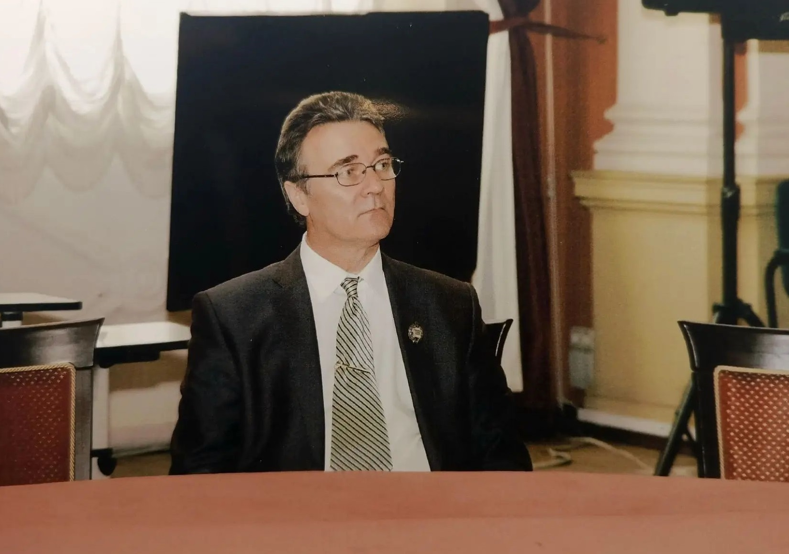

1991, 2019
Две персональные выставки в Голубом зале Научно-исследовательского музея Российской академии художеств.
Об авторе · 1959 — 2026
Художник · Реставратор · Педагог
«Продолжая традиции классической живописи, он передавал лирическое начало в повседневном. Каждая его картина — это разговор о времени».

Памяти Сергея Николаевича Гривы. Видео, собранное поклонниками его творчества и коллегами.
Светлая память художнику, чьи работы продолжают жить и говорить со зрителем.
Ключевые вехи жизни и творческого пути. Хронология — по годам.
Родился в селе Уралово Сумской области.
Закончил среднюю школу.
Служба в рядах Советской армии.
С отличием окончил Ленинградское художественное училище имени В. А. Серова по специальности «художник-реставратор масляной и темперной живописи».
Поступил на работу в Научно-исследовательский музей Российской академии художеств.
Окончил Институт живописи, скульптуры и архитектуры им. И. Е. Репина по специальности «искусствовед».
Возглавил сектор реставрации станковой живописи Научно-исследовательского музея РАХ.
Принят в члены Союза художников России.
Возглавил отдел реставрации Научно-исследовательского музея РАХ.
Награждён медалью «За заслуги перед Академией художеств».
Присвоено звание «Ветеран труда».
Присвоено звание «Заслуженный работник культуры Российской Федерации».
Избран доцентом кафедры реставрации Института живописи, скульптуры и архитектуры им. И. Е. Репина.
Сергей Николаевич ушёл из жизни. Его живопись — пейзажи, натюрморты, цветы — остаётся с нами.
Официальное признание заслуг художника и реставратора
Медаль «За заслуги перед Академией художеств»
Звание «Ветеран труда»
Звание «Заслуженный работник культуры Российской Федерации»
С 1984 года — в Научно-исследовательском музее Российской академии художеств. С 1994 года — заведующий отделом реставрации.
«Реставрация — это разговор с автором через столетия. Каждый слой краски, каждое движение кисти — это след чужой руки, которую ты обязан понять прежде, чем к ней прикоснуться».
Возглавил сектор реставрации станковой живописи Научно-исследовательского музея РАХ. Под его руководством проводились работы по сохранению и восстановлению произведений из фондов музея.
Возглавил отдел реставрации музея. Работа отдела охватывала широкий круг памятников — от станковой живописи до мемориальных предметов из фондов Дома-музея И. Е. Репина «Пенаты», Музея-квартиры И. И. Бродского и Музея-мастерской А. И. Куинджи.
Избран доцентом кафедры реставрации Института живописи, скульптуры и архитектуры им. И. Е. Репина. Передавал студентам опыт, накопленный за десятилетия работы с музейными фондами.
11 персональных выставок — от Голубого зала НИМ РАХ до Музея-усадьбы П. П. Чистякова
Две персональные выставки в Голубом зале Научно-исследовательского музея Российской академии художеств.
Шесть персональных выставок в Музее-квартире И. И. Бродского — одном из ключевых выставочных пространств Петербурга.
Персональная выставка в парадных залах Научно-исследовательского музея РАХ.
Персональная выставка в Музее Ф. М. Достоевского.
Персональная выставка в Музее-усадьбе П. П. Чистякова.
Постоянный участник ежегодных выставок педагогов Института им. И. Е. Репина и юбилейных выставок Союза художников России.
Несколько кадров из жизни художника и его работ


«Если вы хотите увидеть работы, запросить каталог или обсудить возможность приобретения — напишите. Мы открыты к диалогу с коллекционерами, галереями и исследователями».